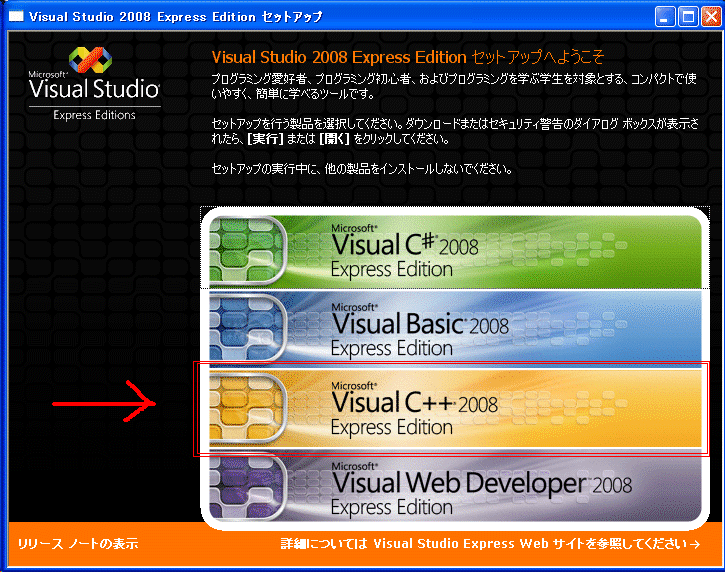

・・・かなり大きいデータなので時間がかかります。（1.09GB）
ダウンロードしたら、拡張子が*.isoになっていると思います。
isoファイルはDVDイメージそのままなので、
Visual Studio 2008 Express Edition の DVD イメージからのインストールのページ
に書いてある通り、カラのDVD-R（RW）にCDを焼くソフトを使って書き込み、物理的にCDを作る方法がありますが、
裏技的なものもあります。
DAEMON Tools
これを使ってisoイメージを仮想的にマウントして実行する方法です。
daemon4123-lite.exeをダウンロードしてください。
慣れればこちらのほうが便利です。
CDを焼くソフトについてはフリーでもいいものがたくさんあります。
PCにあらかじめ入っているものもあります。

正常に起動するとこのようなインストールメニューがでてきます。
Visual C++ 2008 Express Editionをクリックしてインストールしてください。